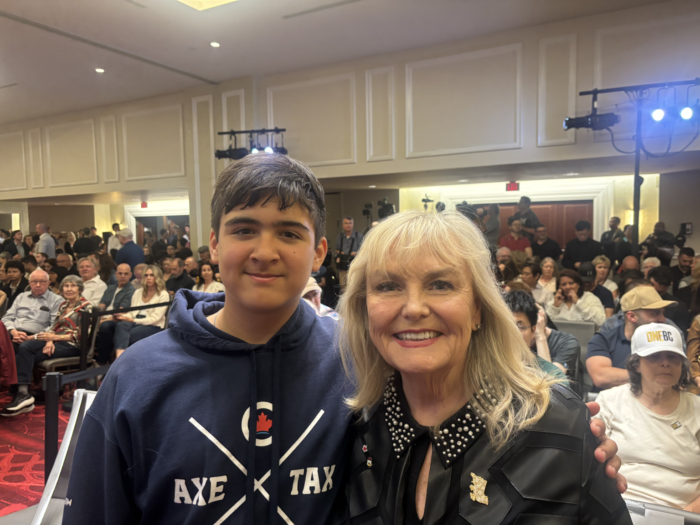
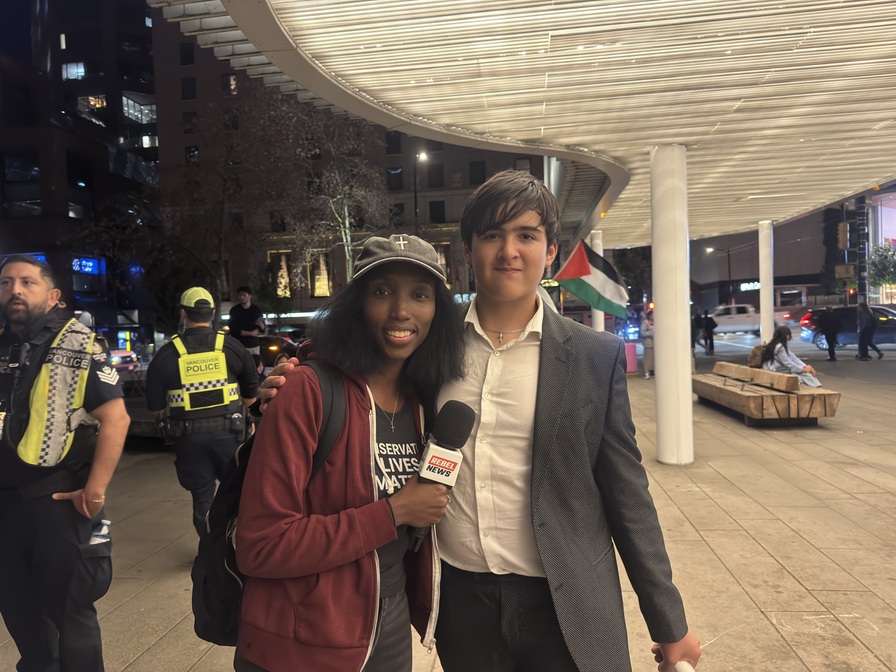

Professional security
Qualified security support for public appearances when circumstances reasonably call for it.
Daniel participates in public events and community activities. This fund helps make responsible professional security and personal-safety measures possible when they are genuinely needed.


Public-facing work can sometimes involve hostility, confrontation, or circumstances where additional planning is sensible. The purpose of this fund is simple: help cover reasonable safety costs so Daniel can continue participating in public life with appropriate support.
Support the fund →Daniel Thiele is a 13-year-old community organizer and public speaker from British Columbia. He has become involved in civic issues, political discussions and public events.
On September 10, 2026, Daniel helped organize a Charlie Kirk memorial and candlelight vigil at the Vancouver Art Gallery. The event made national headlines as the memorial drew significant attention and a counter-protest. During the evening, hostile remarks and accusations were directed at Daniel, and police ultimately escorted Daniel and supporters away from the area.
The experience brought the realities of personal safety into sharper focus. Daniel intends to continue participating in public events, speaking publicly and being involved in his community without allowing intimidation to determine whether he can show up.
That is why this fund exists: to help cover responsible professional security and personal-safety expenses when they are needed.
Specific security arrangements stay private. Publicly, the fund is focused on these broad categories.
Qualified security support for public appearances when circumstances reasonably call for it.
Responsible planning and practical measures that can help public events run more safely.
Other legitimate expenses directly connected with personal safety.
Daniel is out there hosting events, meeting with people, and serving our community. Your support helps ensure he can continue doing that work safely.
Please consider making a donation today.